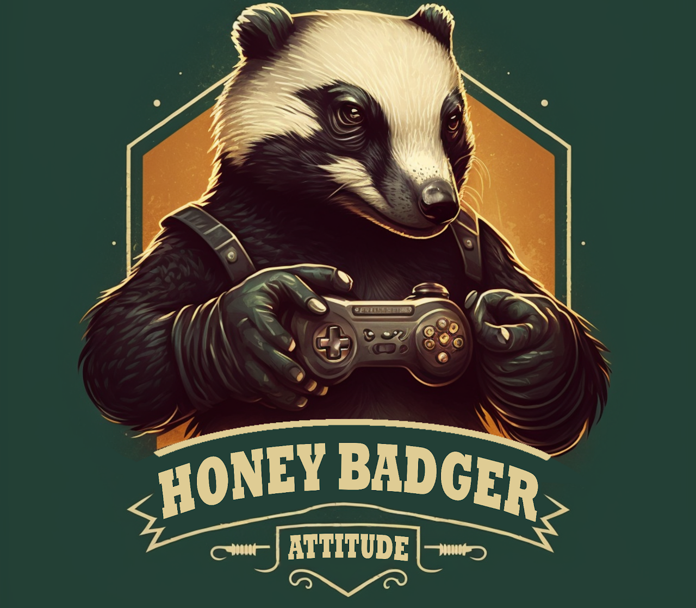
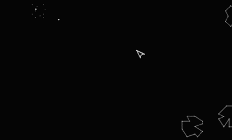
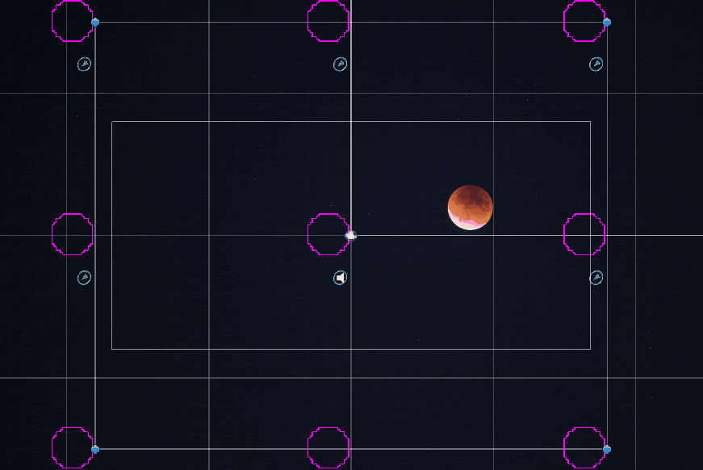
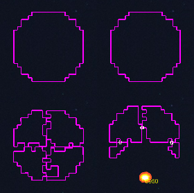
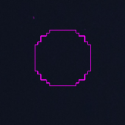
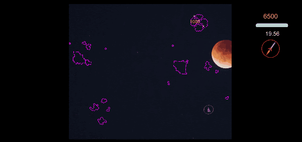

Cometa: Asteroids on (a)steroids

A Honey Badger Attitude production
Cometa was a project between Seoirse Murray and myself (jointly known as Honey Badger Attitude), aiming to develop a small but relatively complete game that would actually be fun to play. Guided by our previous experiences of having bitten off far more than we could chew, we decided that at the end of the process we wanted something that was complete, playable, and deployed. We opted for a remake of a classic — but with a twist.
Asteroids — the original
The idea was to replicate Asteroids — one of Atari’s arcade titans released at the very end of the 70s. Almost everyone will be familiar with what the game is about: the player navigates a spaceship through an asteroid field, trying to avoid contact with drifting debris by skilful manoeuvring and obliterating the flying rocks with the ship’s cannon. The edges of the game screen are stitched — whatever leaves through the right-hand edge reappears on the left, and vice versa.
The base game is pretty basic: with the exception of the player’s ship, the mechanics are purely kinematic (no momentum), and the asteroids do not interact with one another. The damage model is also not particularly satisfying — there is no relation between where a rock is struck and how it splits into sub-asteroids.

The objectives
We wanted more out of our game:
- All objects governed by forces (dynamic, rather than kinematic) and interacting with one another — asteroids can crash and damage each other
- A more realistic damage model: if an asteroid is struck at a certain point, the damage should be localised there, and the extent of damage correlated with the destructive power of the weapon (a rocket should cause more damage than a bullet)
- A true wrap-around world: in the base game an object disappears off-screen and won’t reappear on the opposite side until it has fully gone; we wanted parts of the same object to appear simultaneously on both sides as it crosses the boundary

Handling the true wrap-around turned out to be highly non-trivial, particularly when ensuring rocks don’t spawn on top of one another and that collisions are resolved correctly. We used a number of copies of each object, each detecting collisions and reporting them to a ‘master’, which then handled damage and the underlying data structures before passing information back out to the copies.
The damage model
Implementing the damage model was really interesting. Instead of rocks made up of polygons (as in the original), we opted for a grid model. Each asteroid is a rectangular grid with dimensions sufficient to enclose it. Each projectile is assigned a blast radius — for a bullet this may be a handful of pixels, while for a rocket it may be much larger. When a projectile impacts an asteroid, the grid points inside the blast radius are switched off.

This enabled much better localisation of damage, resulting in more visually satisfying gameplay. It also allowed us to implement more advanced damage mechanics, like shattering. If a sufficient fraction of pixels (the ‘void fraction’) in a given portion of the asteroid is destroyed, the asteroid has a random chance (‘split probability’) to shatter into a multitude of smaller rocks.

The rocket also imparts an impulse onto the remaining sub-asteroids — you can see them colliding with one another, resulting in small dust clouds at contact points.
Connectivity detection
To make splitting work, we need to figure out whether the damage just incurred has resulted in two separate groups of pixels. We implement this with a neighbour-crawl algorithm:
Every pixel is an object possessing information about its neighbours. Starting from the full list of pixels that formed the original asteroid, we begin at the first pixel and store information about its neighbours. We then remove the pixel from the master list and repeat the process for the stored neighbours (taking care not to revisit already-visited pixels — no doubling back). If at the end of this process the master list still has items left in it, those pixels were not reachable from the starting pixel — we have at least two sub-asteroids and a split has occurred.
We then start the process again with the first pixel still present in the master list, and repeat until the list is exhausted and all sub-asteroids are accounted for. The resulting pixel collections are used to create new independent asteroid objects. A very similar algorithm is used to find the outlines of the freshly created sub-asteroids.
The gameplay

Cometa was really fun to work on, and I think it’s quite fun to play. There are some rough edges and the visuals could use some work, but our main objective of getting something playable and deployed was certainly satisfied.
I think we made the right decision to keep the scope tight and the objectives fairly minimalist. Getting a game to a point where it’s ready for deployment and functions robustly when deployed turned out to be a major task even without too many bells and whistles — there is an entire essentially separate process to deployment which, with our previous projects, we didn’t quite manage to get to. It was a valuable learning experience.
For example, once ported to mobile, some fairly naively programmed damage model algorithms performed poorly — the nearest-neighbour crawl, with grid sizes of several hundred pixels on a side, running at 60 FPS with several asteroids on screen simultaneously, was particularly expensive. It was also good learning in terms of codebase structure: not perfect, but definitely better than previous attempts in terms of keeping interfaces cleaner and more independent.